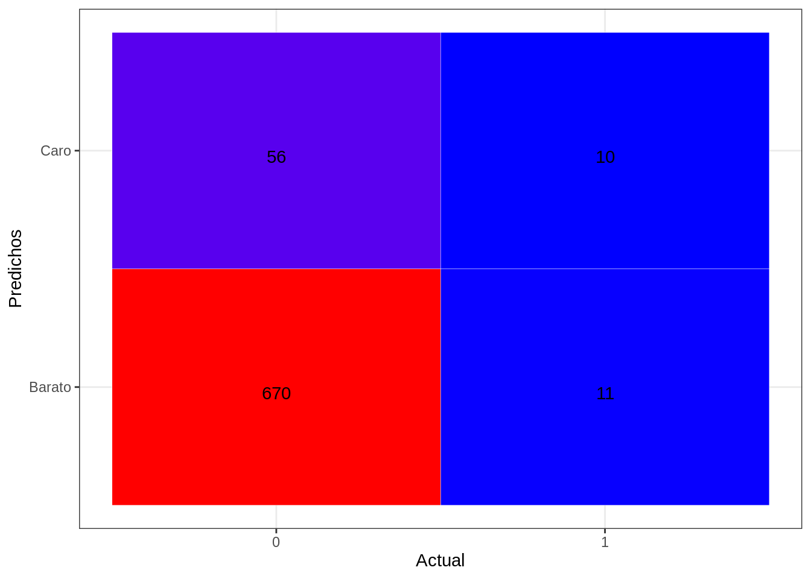

library(class)
library(dplyr)##
## Attaching package: 'dplyr'## The following objects are masked from 'package:stats':
##
## filter, lag## The following objects are masked from 'package:base':
##
## intersect, setdiff, setequal, unionlibrary(caret)## Loading required package: lattice## Loading required package: ggplot2library (ROCR)
source("funcs.R")dataTrain <- readRDS("datasetTrain.csv")
dataTest <- readRDS("datasetTest.csv")dataTrain <- dataTrain %>% dplyr::select(-SalePrice)
dataTest <- dataTest %>% dplyr::select(-SalePrice)
group <- c('TotalSF','LotArea','GrLivArea','GrupoPrecio')
dataTrain <- dataTrain %>% dplyr::select(group)
dataTest <- dataTest %>% dplyr::select(group)XTrain <- dataTrain %>% dplyr::select(-GrupoPrecio)
YTrain <- dataTrain$GrupoPrecio
XTest <- dataTest %>% dplyr::select(-GrupoPrecio)
YTest <- dataTest$GrupoPrecio
#XTrain<- as.data.frame(lapply(XTrain, normalize_standar,4,5))
#XTest<- as.data.frame(lapply(XTest,normalize_standar,3,4))model <- glm(GrupoPrecio ~ ., family=binomial(link='logit'),data=dataTrain)
summary(model)##
## Call:
## glm(formula = GrupoPrecio ~ ., family = binomial(link = "logit"),
## data = dataTrain)
##
## Deviance Residuals:
## Min 1Q Median 3Q Max
## -5.0296 -0.2866 -0.1846 -0.1252 2.6076
##
## Coefficients:
## Estimate Std. Error z value Pr(>|z|)
## (Intercept) -8.341e+00 5.155e-01 -16.180 < 2e-16 ***
## TotalSF 1.472e-03 2.575e-04 5.717 1.09e-08 ***
## LotArea 1.638e-05 8.520e-06 1.923 0.0545 .
## GrLivArea 4.689e-04 3.789e-04 1.238 0.2158
## ---
## Signif. codes: 0 '***' 0.001 '**' 0.01 '*' 0.05 '.' 0.1 ' ' 1
##
## (Dispersion parameter for binomial family taken to be 1)
##
## Null deviance: 765.55 on 1740 degrees of freedom
## Residual deviance: 547.93 on 1737 degrees of freedom
## AIC: 555.93
##
## Number of Fisher Scoring iterations: 7pred <- predict(model, newdata = XTest,type='response')
pred <- ifelse(pred > 0.5,1,0)
misClasificError <- mean(pred != YTest)
(misClasificError)## [1] 1tab_test <- table(pred, YTest, dnn = c("Actual", "Predichos"))
(tab_test)## Predichos
## Actual Barato Normal Caro
## 0 700 39 0
## 1 3 3 2accuracy(tab_test)## [1] 94.10977knn_test_error <- calc_error_rate(predicted.value=model, true.value=YTest)## Warning in `!=.default`(true.value, predicted.value): longitud de objeto mayor
## no es múltiplo de la longitud de uno menor## Warning in is.na(e1) | is.na(e2): longitud de objeto mayor no es múltiplo de la
## longitud de uno menor(knn_test_error)## [1] 1draw_confusion_matrix(tab_test, "Actual", "Predichos")